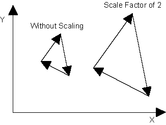

|
Was this information helpful? Yes No |
Copyright |
|
You are here: CNC Option > G-Code and M-Code Programming > Motion > Advanced Motion > Scaling > G151 Command (Set Scale Factor)
|
| Syntax: | G151 <AxisPoint>
|
|
Example: |
G151 X2 Y2 |
Use the G151 Command (Set Scale Factor) to scale the size of a part. You can increase or decrease the size of a part by the values that you specify for the axes. These values become the scale factors. A scale factor that is greater than 1 increases the size of a part. A scale factor that is less than 1 decreases the size of a part. The G151 command scales only the programmed position targets of the CCW, CW, BEZIER, LINEAR, MOVEABS, MOVEINC, and RAPID motion commands.
The G151 command is modal and it is not necessary for you to specify it on each program line. If you do not specify the G151 command, the controller uses the previously specified value of this command to scale the part. The G151 command stays in effect until you issue the G150 Command (Clear Scale Factor), which disables scaling. You can make sure that the active state of the G151 command is correct by using the ScalingActive bit of the Task Status 2 status item.

When you issue the G151 command, the controller makes a scale center at the current position. Then it scales, by the specified scale factor, all absolute motion coordinates that you supply. The controller scales these coordinates around the scale center. Refer to the equation that follows.
For Example
If you scale by 2 at the position of {1,1}, then a subsequent absolute move to {2,3} actually moves to {3,5}.
The G151 command does not scale all of the values that you supply. This command scales only the programmed position targets of the CCW, CW, BEZIER, LINEAR, MOVEABS, MOVEINC, and RAPID motion commands.
Velocity targets such as the F and E Commands and <Axis>F<Speed>. For more information about <Axis>F<Speed>, refer to RAPID Command.
Acceleration targets such as RAMP RATE Command arguments.
Coordinates that you supply for the G92 Command (Set an Arbitrary Program Offset) or for fixture offsets. Make sure that you always supply coordinates in the coordinate system that is not scaled. For more information about fixture offsets, refer to Fixture Offsets Overview.
Parameters that you configure, such as the RolloverCounts Parameter and SoftwareLimitHigh Parameter.
To disable scaling, use the G150 Command (Clear Scale Factor).
|
NOTE: When you use the BEZIER, CCW, CW, and G151 commands, make sure that you supply the same scale factor for the axes in the G151 command. If you supply different scale factors, arcs stay circular and do not become elliptical. As a result, unexpected circular radius errors or geometries can occur. |
|
NOTE: You can use negative scale factors to mirror parts. But if you use the R Method to program coordinated arcs, you must change the arithmetic sign of the R value to get the correct mirror effect. For more information, refer to the R Method section of CCW Command or CW Command. |
|
Was this information helpful? Yes No |
Copyright |
 2001-
2001-